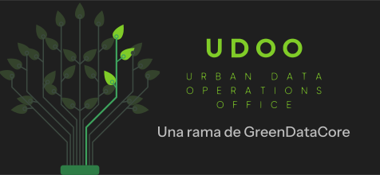

Inteligencia de datos para servicios urbanos.
GreenDataCore convierte la operación de los servicios urbanos en decisiones basadas en datos.
Empresa madrileña especializada en datos, GIS y control de calidad para limpieza viaria, zonas verdes, residuos y equipamientos municipales.
Del campo a la decisión en cinco capas, con la plataforma de datos como núcleo
Procesos y control de calidad
Tipos de inspección, frecuencias, checklists e indicadores.
Captura de datos en campo
Aplicaciones y formularios online y offline, georreferenciados.
Plataforma de datos
Modelo unificado, ETL e integración segura con MINT.
GIS y cuadros de mando
Visores, mapas temáticos, KPIs por distrito y alertas.
Gobernanza y Oficina Técnica
Comités de seguimiento, mejoras, documentación y formación.
Tres ventajas de gestionar el servicio con datos
Lo que obtiene la Administración o la empresa prestataria cuando el control del servicio se apoya en una plataforma de datos.
-
Ahorro de costes
Los datos se capturan una sola vez en campo y se reutilizan en informes, inspecciones y certificaciones: menos trabajo administrativo y menos inspecciones repetidas.
-
Gestión eficiente de recursos
Personal, vehículos y frecuencias se asignan según indicadores por zona y distrito, con una visión unificada de todos los contratos.
-
Automatización de procesos
Informes, alertas y tareas repetitivas se generan de forma automática, con trazabilidad de cada actuación y sin depender de hojas de cálculo manuales.
Solicitar una reuniónLe mostramos cómo se aplicaría a su contrato.
Una Oficina Técnica de Datos para los servicios de la ciudad
GreenDataCore no ejecuta el servicio: diseña y opera el sistema que controla cómo se ejecuta.
Modelo de control de calidad
Tipos de inspección, frecuencias, checklists, niveles de calidad, indicadores y procedimientos homogéneos.
Captura de datos en campo
Aplicaciones móviles y formularios digitales, online y offline, con georreferenciación y evidencias fotográficas.
Plataforma de datos e integración
Modelo de datos unificado que consolida inventarios, incidencias, inspecciones, sensores y avisos ciudadanos, integrado con los sistemas municipales.
GIS y cuadros de mando
Visores de mapas, mapas temáticos y de calor, KPIs por contrato y distrito, tendencias y alertas.
Automatización e inteligencia artificial
Automatización de informes y tareas repetitivas y analítica avanzada aplicada al servicio.
Oficina Técnica y gobernanza
Coordinación del contrato, comités de seguimiento, gestión de mejoras, documentación y formación.
ÁmbitosLimpieza viariaZonas verdes y parquesResiduosEquipamientos municipales
Para quién trabajamos
El cliente principal es la Administración local que contrata y supervisa servicios urbanos; las empresas prestatarias y los socios tecnológicos completan el ecosistema.
| Destinatario | Qué necesita | Qué le aportamos |
|---|---|---|
| Ayuntamientos y sus direcciones generales | Control riguroso de los contratos, transparencia y modernización del modelo de gestión. | Un modelo homogéneo de control de calidad, trazabilidad de cada actuación y decisiones basadas en datos. |
| Servicios Técnicos Municipales | Información fiable y a tiempo para supervisar y priorizar. | Mapas, indicadores y cuadros de mando por contrato y distrito. |
| Empresas prestatarias de servicios urbanos | Demostrar la calidad del servicio y anticiparse a las incidencias. | Datos de su propia operación, comparables y verificables. |
| Socios tecnológicos | Proyectos con cliente público, requisitos claros y relación institucional. | Conocimiento del cliente, traducción de pliegos a requisitos y coordinación diaria con la Administración. |
Qué nos diferencia
GreenDataCore traduce la operación del servicio a tecnología: conoce el terreno, el contrato y el sistema municipal, y construye sobre ello una plataforma de datos propia.
Traductor operación‑tecnología
Entendemos el lenguaje de capataces, inspectores y responsables de contrato, y lo convertimos en requisitos para soluciones útiles.
Más de una década gestionando servicios urbanos
Experiencia directa en la dirección de contratos municipales: pliegos, coordinación con los Servicios Técnicos e integración con sistemas corporativos (MINT, cumplimiento ENS nivel medio).
Tecnología y ciberseguridad de nivel empresarial
Socios con décadas de experiencia en consultoría tecnológica, cloud, ciberseguridad, infraestructura e inteligencia artificial.
Modelo replicable
Lo que se construye para un contrato sirve para limpieza viaria, residuos y zonas verdes de otros contratos y de otras ciudades.
| Práctica habitual en el sector | Enfoque de GreenDataCore |
|---|---|
| Reporting en Excel y documentos PDF estáticos | Plataforma de datos propia, integrada con MINT y con sistemas GIS |
| Visión fragmentada: cada contrato se gestiona por separado | Visión global y unificada de todos los contratos y zonas |
| GIS limitado, sin IA ni automatización | Capacidad interna en BI, GIS, IA y automatización aplicada a servicios urbanos |
| Dependencia de terceros para integraciones y desarrollos | Autonomía técnica y alianzas con socios tecnológicos bajo una misma dirección |
| Enfoque reactivo ante los problemas | Indicadores, tendencias y alertas para anticiparse |
Solicitar una reuniónAnalizamos con usted los datos de su contrato.
Que los servicios de la ciudad se gestionen con datos, no solo con intuición.
Misión
Integrar, interpretar y transformar los datos de los servicios urbanos en decisiones operativas, con modelos de control de calidad homogéneos, trazabilidad de cada actuación y herramientas que la Administración y las empresas prestatarias usan a diario.
Visión
Ser el socio tecnológico de referencia en datos para servicios urbanos: un modelo nacido en Madrid y replicable en otras ciudades y administraciones.
- Rigor del dato
- Cada afirmación se apoya en un dato con unidad y fuente; los indicadores y las reglas de calidad se definen antes de medir.
- Conocimiento del terreno
- Hablamos el lenguaje de capataces, inspectores y responsables de contrato, y lo convertimos en requisitos claros.
- Transparencia y trazabilidad
- Cada intervención queda registrada, documentada y verificable.
- Replicabilidad
- Procesos, cuadros de mando y plantillas se diseñan para servir a más de un contrato y de una ciudad.
- Colaboración
- Trabajamos con socios tecnológicos y con la Administración; no pretendemos hacerlo todo solos.

UDOO, la primera rama de GreenDataCore
UDOO — Urban Data Operations Office es la Oficina Técnica de Datos y Control de Calidad para servicios urbanos, y el proyecto con el que GreenDataCore entra en el mercado, empezando por las zonas verdes de Madrid.
- Replicación en otros servicios
- El modelo UDOO aplicado a limpieza viaria, residuos y zonas verdes de otros contratos.
- Oficina Técnica de Datos como servicio
- La Oficina Técnica de Datos paquetizada para otras ciudades y administraciones.
- Productos reutilizables
- Cuadros de mando, scripts, plantillas y desarrollos convertidos en producto.
Hablemos
Cuéntenos qué servicio gestiona y qué necesita. Le responderemos a la mayor brevedad para concertar una reunión.